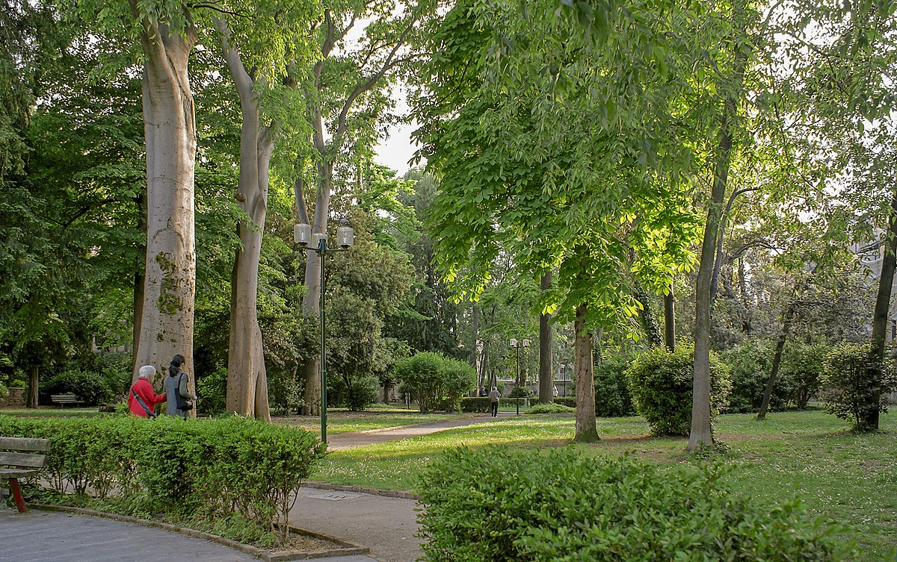
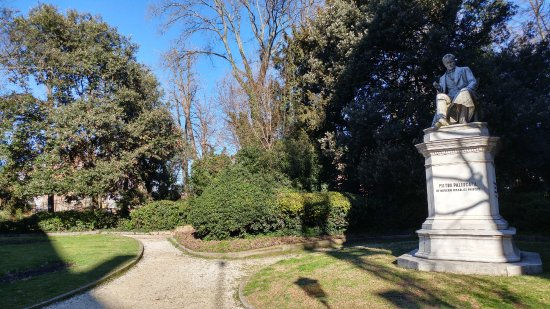
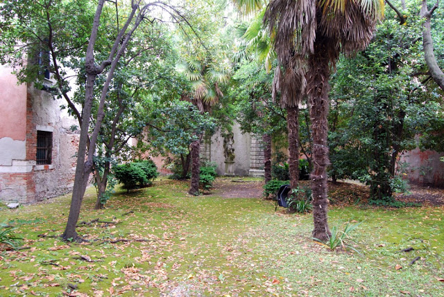
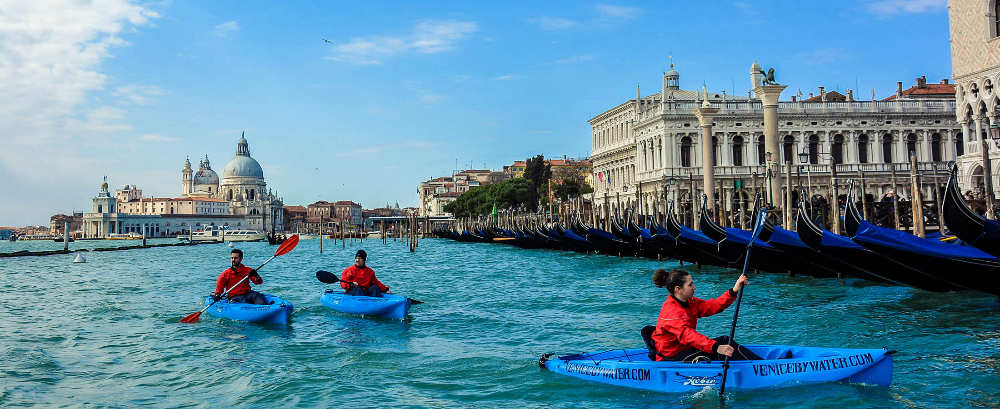

Lokale activiteiten
De glasblazerij in Venetië

Maak je eigen glazen kunstwerk met een meester glasblazer
9,00
Tripadvisor
-------------------------
Carnaval Maskermakerij in Venetië

Je kunt hier je eigen masker maken en versieren
€42,-
tripadvisor
Natuur
Giardini Savorgnan
Een mooi park voor even ontspanning
Gratis
Tripadvisor
-------------------------
Parco Pubblico "Giardino della Marinaressa"
In dit park staan veel standbeelden om te bekijken
Gratis
Tripadvisor
-------------------------
Giardino di Ca’ Tron
Een tuin met allemaal mooie planten
Gratis
Tripadvisor
Outdooractiviteiten
Venice Kayak
Roeien door de grachten van venetië
De prijs verschilt heel erg van welke grachten je kiest
Tripadvisor
-------------------------